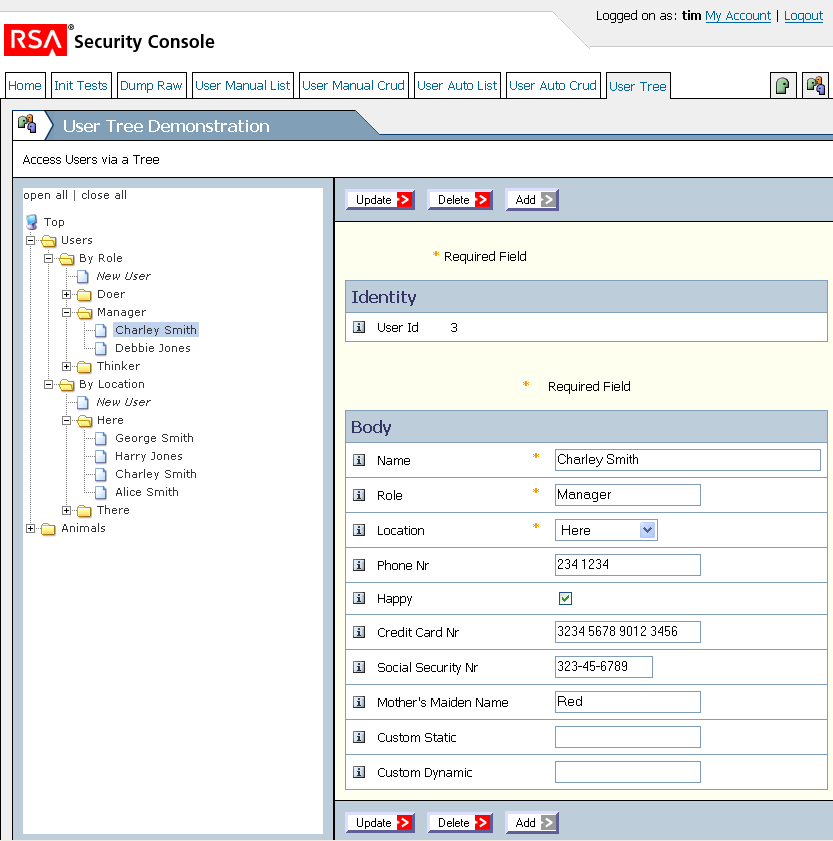

Agile Java Web Development with SimpleWebApp
25 June 07, Anthony Berglas, Initial
5 July 07, Anthony Berglas, Updated examples
Introduction
SimpleWebApp lets you quickly develop high quality web
applications.
It provides reusable templates that encapsulate standard user
interaction
patterns that
list, view and update data (CRUD). SimpleWebApp also cuts through
the layers to integrate interfaces with databases. This means
that the only code you need to write is real application logic rather
than large quantities of repeditive glue code. And the code you
do write is plain old Java code because developing web application
should be ... simple.
SimpleWebApp associates rich meta data with each field to specify
details
such as their display width, widget type, grouping and whether the
field must be non-null. This enables templates to be utilized for
a wide variety of forms without needing to alter the templates
themselves. The meta data can be
specified at the interface level or be defaulted from meta data
associated directly with database fields. Business rules can also
be incorporated at the
interface or database definition level. And the templates can be
selectively overriden to provide non-standard interfaces.
This meta data driven approach enables customers to
extend a core application's interfaces, business rules, and persisted
data in external jars without any need to change the core
application itself. Traditional monolithic applications can then
be rearchitected as a core services with sepecific extension
packages. Applications can also be re-branded by providing
alternative template defintions that
can radically change their look and feel. Templates can also
automate
the provision of web services.
SimpleWebApp uses very transparent Java code, with no code generators,
reflection, @annotations, EJBs etc. View templates are
implemented as
ordinary JSPs, and SimpleWebApp.jar is just 50K. Keeping it
simple
makes any problems easy to diagnose and so reduces the technical risk.
SimpleWebApp's lightweight, highly productive design is analagous to
Ruby
on Rails. However SimpleWebApp's use of structured meta data is
more
suitable for the
more structured Java type system, and it enables a higher level of
abstraction
of common operations. JBoss Seam was inspired by Rails, but
unlike SimpleWebApp it uses psuedo POJOs to access heavy weight EJB,
JSF
and Hibernate technologies. (There is a more detailed comparison
in the Technical Overiview.)
Example of "Automatic" Development
Consider the following screen which provides a tree view of Users
classifies by Role or Location. It then enables
selected users to be Created, Read, Updated or Deleted.

A form like this would take substantial effort to implement
using conventional technologies. However SimpleWebApp's meta data
driven approach enables it to be created very succinctly by utilizing
abstract user interface and user interaction patterns.
The following tiny fragment lists the code in usertreetest.jsp
that defines the page's view. The WPage tag links
the page to the WUserTreePage controller Java class which
provides the
meta data required by treecrud to render the page. treecrud.tag
is a
conventional JSTL template that uses nested JSTL templates to produce
the HTML for the tree and CRUD
components. The CRUD component can automatically render the form
because of the menu, field and button meta data provided by WUserTreePage.
<sw:page>
<sw:treecrud/>
</sw:page>
The form above is rendered using RSA's sophisticated ESG
template. But tiny
changes to the jsp can have it rendered in different templates to suit
different branding requirements. For example, the plain template provides the same
interface using very simple HTML.
The Java controller class required for this complex form is also tiny
as listed below. WUserTreePage consists of two
pagelets, WUserTreeCrudlet
and WUserTreePagelet that represent the left and right parts
of the page. WUserTreeCrudlet extends WGenericCrudPagelet
which produces a CRUD form for a specific table,
in this case the WUser table as specified in its
constructor.
public class WUserTreePage extends WTestPage {
WTestMenus.Database menus = setMenu(new WTestMenus.Database());
public final WUserTreeCrudlet pagelet = new WUserTreeCrudlet(this);
public final WUserTreePagelet treelet = new WUserTreePagelet(this);
public static class WUserTreeCrudlet extends WGenericCrudPagelet {
//final WFieldInteger userId = addField(identityGroup, new WFieldInteger("userId")).setReadOnly(true);
//final WField name = addField(crudGroup, new WFieldString("name")).setRequired(true); ...
public WUserTreeCrudlet(WUserTreePage page) {
super(page, WUser.meta);
page.setRedirectItem(page.menus.userTreeTest);
generateCrudFields();
} }
public static class WUserTreePagelet extends WTreePagelet {
WTree tree = new WTree();
@Override protected void onPreValidate() throws Exception {
WTree.WTreeNode ur = tree.addNode(u, "By Role", "usertreetest.jsp");
new WGenericTree().addSubTree(tree, ur, WUser.meta, WUser.ROLE, WUser.NAME, WUser.USER_ID);
WTree.WTreeNode ul = tree.addNode(u, "By Location", "usertreetest.jsp");
new WGenericTree().addSubTree(tree, ul, WUser.meta, WUser.LOCATION, WUser.NAME, WUser.USER_ID);
} } }
generateCrudFields automatically creates meta data objects
for each column in WUser, which in turn causes them to
be displayed on the rendered form. The meta data can also be
created manually as illustrated by the commented out lines of code, as
discussed in the next section.
Likewise addSubTree knows how to
populate a subtree with data from a given table (WUser),
grouped by a specifed column (ROLE), displaying a specific
column (USER_ID) etc. (All default behaviors
can be selectively overridden, as described in the next section.)
The RSA_USER table itself is defined using meta data that is
created by the following SimpleORM code. It simply adds SFieldMeta
objects
such as USER_ID to an SRecordMeta object that
describes the table. Other meta information such as which columns
form part of the primary key and the width of string fields are
specified as additional parameters. This definition can be used
to generate the SQL CREATE TABLE statements as well as
providing the meta data that WGenericCrudPagelet uses to
provide the actual controller logic.
public class WUser extends WRecordInstance {
public static final SRecordMeta meta =
new SRecordMeta(WUser.class, "RSA_USER");
public static final SFieldInteger USER_ID =
new SFieldInteger(meta, "userId", SCon.SFD_PRIMARY_KEY,
SCon.SGENERATED_KEY.pvalue(new SGeneratorSelectMax(meta)) );
public static final SFieldString NAME =
new SFieldString(meta, "name", 40, SCon.SFD_DESCRIPTIVE, SCon.SFD_MANDATORY);
public static final SFieldString ROLE =
new SFieldString(meta, "role", 20, SCon.SFD_MANDATORY);
public static final SFieldString LOCATION =
new SFieldString(meta, "location", 20, SCon.SFD_MANDATORY);
static { setOptions(LOCATION, "Here", "There", "Somewhere", "Nowhere");}
...
public @Override void validateField(SFieldMeta field, Object newValue) {
if ( field == NAME && newValue != null ) {
if (((String)newValue).length() < 5 )
throw new WValidationException("User.Name5Chars", null)
.setParameter(newValue+"");
} }
Note that the code above specifies that the NAME be 40
chars lonG and MANDATORY (not null). This is used
to create table columns appropriately. But it is also used to
make the NAME field on the user inteface 40 characters wide,
and to add a "*" to indicate to the user that the field is
required. It also adds a business rule to the UI code which
ensures NAME is not null. There is never any need to
respecify that information,
there is a single source of truth that works through all the layers.
The validateField method is called whenever a WUser field
is changed and implements a (silly) business rule on the NAME field.
SimpleWebApp catches any WValidationExceptions and presents
internationalized messages to the user. (There are several ways
to implement validation methods, including as event objects or per
field (anonymous) subclasses. They can also be added to specific forms
rather than database record definitions.)
(The WUser definition uses SimpleORM to access the database. It
is also possible to use other tools such as Hibernate, with methods
such as retrieveBeanProperties(row, getAllFields())
automatically utilizing POJOs. But SimpleORM is more transparent,
requires less ORM code, makes it easier to associate meta data
with table definitions, and facillitates externally defined
customizations.)
The use of meta data enables a sophisticated form to be created with
very little code. This is implemented by very plain Java code
without the need for generators, XML, @annotations, complex build tasks
etc.
More Manual Components
SimpleWebApp enables forms to be selectively customized at both
the view and controller level. For example, the following JSP
file defines a CRUD form with three fields explicitly named, namely id,
name and alignment. The id field has
been specified very manually in terms of raw HTML, but the name and
alignment fields have been specified more automatically by
referencing meta data. Likewise menus and buttons have been
specified completely automatically.
<esgp:page-begin/>
<esgp:heading>
<esgp:menuAuto/>
<esgp:body links=" ">
<esgp:buttons/>
<esgp:fieldBody>
<tr>
<td class=field_info> </td>
<td class=field_label><fmt:message key="id"/></td>
<td class=field_req>*</td>
<td class=field_input>
<input name="id” value="${fn:escapeXml(wPage.id.text)}">
</td>
</tr>
<esgw:field name="name"/>
<esgw:field name="alignment"/>
</esgp:fieldBody>
<esgp:buttons/>
</esgp:body>
</esgp:heading>
<esgp:page-end/>
The templates themselves are just JSP .tag files, so it is also easy
for users to create or modify templates. (The templates are
broadly similar to Ruby on Rails templates, but have richer meta data.)
The WManualUserCrudPagelet controller below has also
been specified more manually. The three WField
objects userId, name and location have been
specified explicitly as final instance variables rather than having
been generated directly from a record definition using generateCrudFields.
Properties such as being required or the display length are explicitly
set. (There is no need to use this coding style, it is plain old
Java code.)
Forms are normally posted back to themselves when the user presses a
submitting button. In this case validates and converts all of the
field values and if there were no errors it calls the onWasSubmitted
method. onWasSubmitted then explicitly updates
the user database record with the values of the form fields.
Likewise the buttons are explicitly declared and disabled as necessary.
This processing is quite general and any form logic can be implemented,
inlcuding redirections to other pages. There is no need use a
database at all, and certainly not the SimpleORM interface shown
above. It is only classes in the separate SimpleWebApp.dbute
package such as WGenericCrudPagelet which link the
two. However, SimpleORM's ability to easily store and access
arbitrary meta attributes against fields and records makes it easy to
use and build tool such as WGenericCrudPagelet.
(Posting back to the same page simplifies error processing, and enables
form oriented view state to be maintained to implement optimistic
locking. A user can resubmit a
form if they make an error without losing field values . This
aspect is like ASP.NET but unlike Rails.)
public static class WManualUserCrudPagelet extends WPagelet {
WFieldGroup crudGroup = addGroup(this, new WFieldGroup("crud"));
final WFieldInteger userId = addField(crudGroup, new WFieldInteger("userId")).setReadOnly(true);
final WField name = addField(crudGroup, new WFieldString("name")).setRequired(true).setDisplayLength(40);
final WField location = addField(crudGroup, new WFieldString("location"));
public void onWasSubmitted() {...
WUser user = (WUser) WUser.meta.findOrCreate(userId.getValue());
user.setString(WUser.NAME, (String) name.getValue());
user.setString(WUser.LOCATION, (String) location.getValue()); ...
}
public WButton update = addNewButton("Update"); ...
@Overrideprotected void onPreValidate() {
if ( userId.getText() == null ) {
update.setDisabled(true); ...
} }
...
The astute reader may have noticed that the WUser definition
above does not actually contain the Custom Static and Custom Dynamic
fields that are displayed in the tree crud form above. They are
actually contained in a seprate class, WUserCustomize, which
could be packaged in a different jar provided by a different team of
programmers. The code itself simply creates additional SFieldMeta
objects, which may or may not have a corresponding final variable
to make them easy to access.
Business rules can also be added at this level, and fields and rules
could also be added to specific pages.
public class WUserCustomize {
public static final SFieldString CUSTOM_STATIC =
new SFieldString(WUser.meta, "customStatic", 20);
...
for (String cf: customFields)
new SFieldString(WUser.meta, cf, 20);
}
Finally, the same meta data that automates the implementation of user
interfaces can be used to automate computer interfaces, ie. web
services. Each field on a JSP page simply becomes an element in a
web service's XML. The service is accessed by simply changing the
URL from .../MyPage.swb to .../MyPage.xml. No
code is required. (Of course special case web services can also
be implemented, but SimpleWebApp automates the common case.)
Further Reading
Other documentation is included in the common/doc folder in the
distribution. In particular there is tha
SimpleWebApp-Technical-Overview.ppt which covers this material in more
detail. There is also the users guide which describes how to
build SimpleWebApp and run the examples.
SimpleWebApp contains a graduated series of examples which demonstrates
each of its features. They concise and fairly self expanatory
because SimpleWebApp is ... Simple.